VOCABULARY · 主題 2000 字 PART 2 UNIT 26
Animals & insects．動物與昆蟲
陸地動物、鳥、昆蟲、海洋動物，還有動物的叫聲和翅膀，共 30 個。注意不規則複數：deer → deer、ox → oxen、wolf → wolves。
共 30 個單字．點 🔊 聽發音
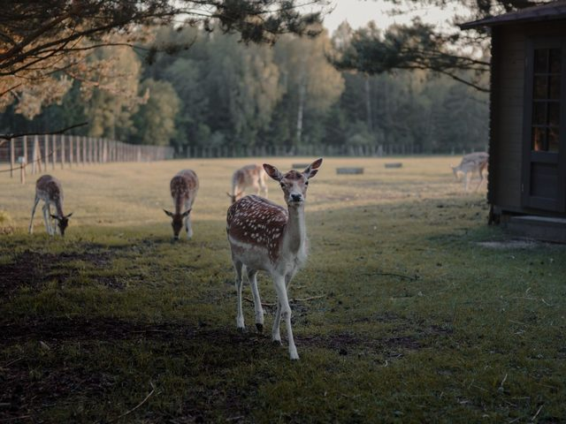
1deern.
鹿
單複數同形 deer
We saw a group of deer in the mountains.我們在山上看到一群鹿。

2dinosaurn.
恐龍
Dinosaurs lived millions of years ago.恐龍生活在幾百萬年前。
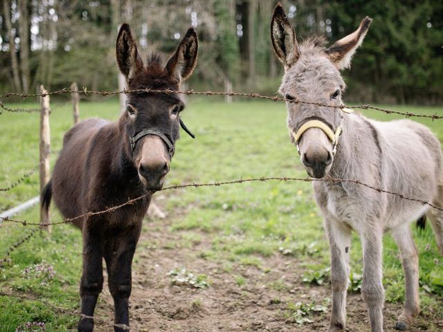
3donkeyn.
驢子
複數 donkeys
The donkey carried heavy bags up the hill.驢子把重重的袋子揹上山坡。
4eaglen.
老鷹
an eagle
The eagle flew high above the mountain.老鷹在山上高高飛翔。
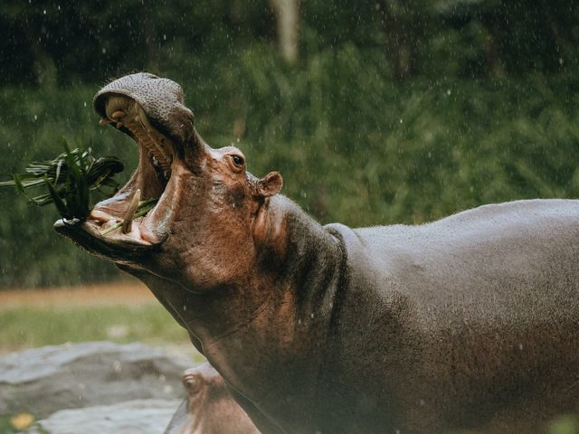
5hippon.
河馬
= hippopotamus
The hippo spends most of the day in the water.河馬一天大部分時間都待在水裡。
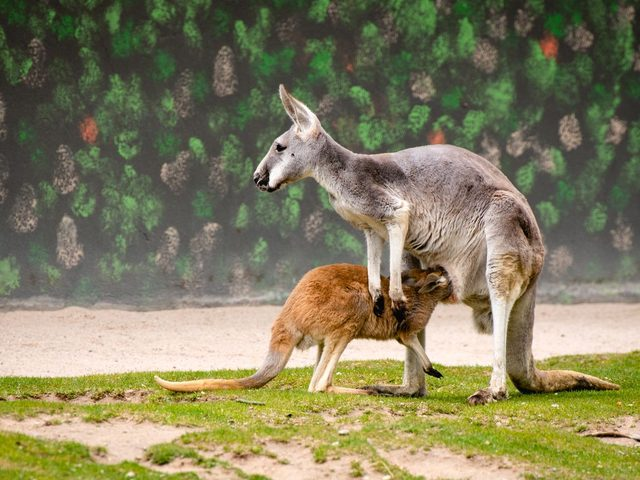
6kangaroon.
袋鼠
A baby kangaroo lives in its mother's pouch.小袋鼠住在媽媽的育兒袋裡。
7kittenn.
小貓
cat → kitten；dog → puppy
The kitten is playing with a ball of yarn.小貓在玩毛線球。

8koalan.
無尾熊
Koalas sleep about 20 hours a day.無尾熊一天睡大約二十個小時。
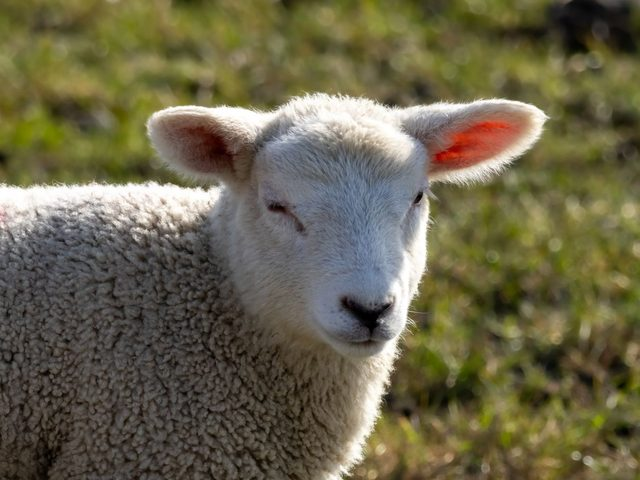
9lambn.
小羊；羊肉
b 不發音
The little lamb followed its mother.小羊跟著媽媽走。

10monstern.
怪物；妖怪
The kids dressed up as monsters for Halloween.孩子們萬聖節打扮成怪物。
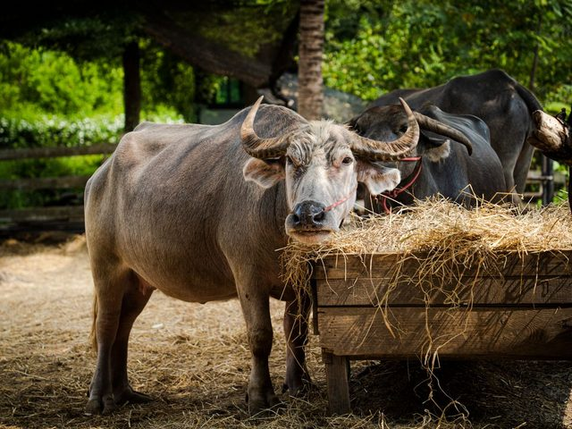
11oxn.
公牛；牛
複數 oxen
Long ago, farmers used oxen to work in the fields.很久以前，農夫用牛在田裡工作。

12pandan.
貓熊
Pandas love to eat bamboo.貓熊愛吃竹子。
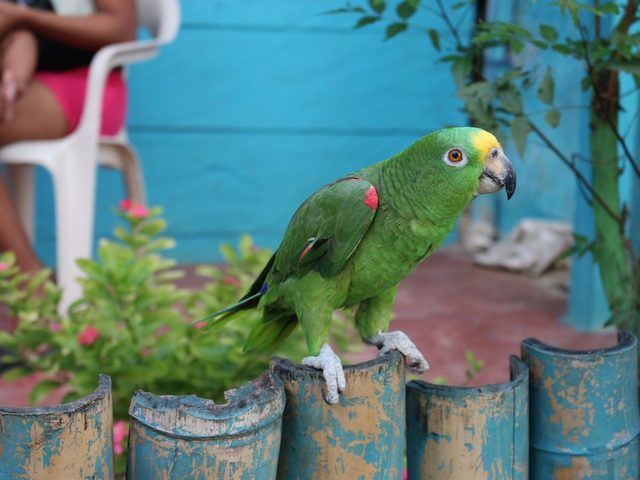
13parrotn.
鸚鵡
Our parrot can say "Hello!"我們家的鸚鵡會說「哈囉！」。
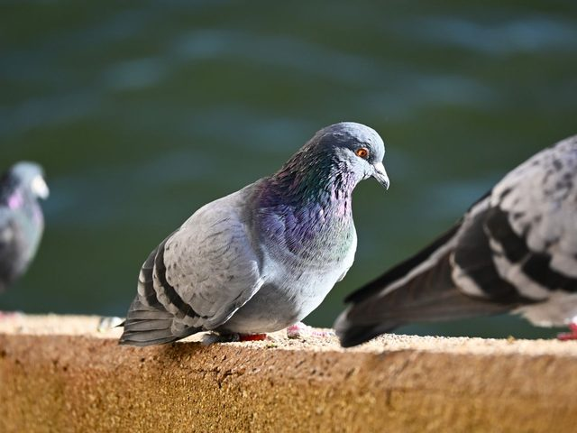
14pigeonn.
鴿子
dove 白鴿（象徵和平）
Many pigeons are looking for food in the square.很多鴿子在廣場上找食物。
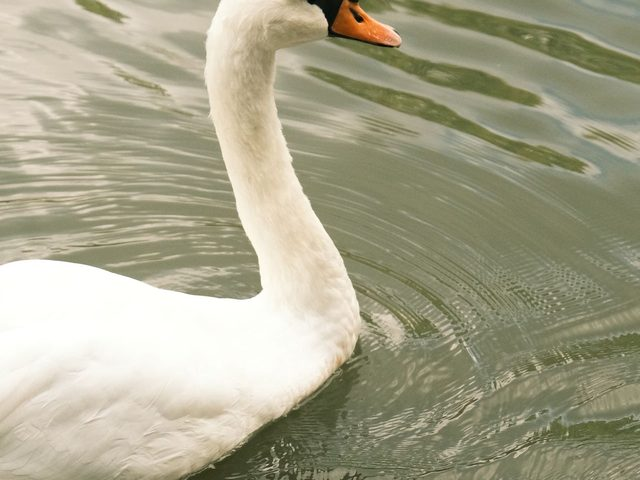
15swann.
天鵝
The Ugly Duckling 醜小鴨長大變天鵝
The swan swam gracefully on the lake.天鵝在湖上優雅地游著。
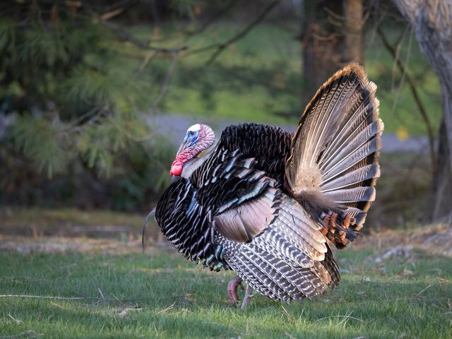
16turkeyn.
火雞；（大寫）土耳其
Turkey 土耳其
Americans eat turkey on Thanksgiving.美國人感恩節吃火雞。
17wolfn.
狼
複數 wolves
Wolves hunt in groups.狼成群打獵。
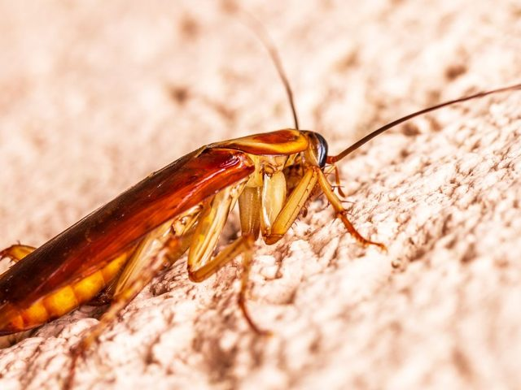
18cockroachn.
蟑螂
複數 cockroaches；口語 roach
There's a cockroach in the kitchen!廚房裡有一隻蟑螂！
19dragonn.
龍
Dragon Boat Festival 端午節
In Chinese stories, dragons bring rain.在中國故事裡，龍會帶來雨。
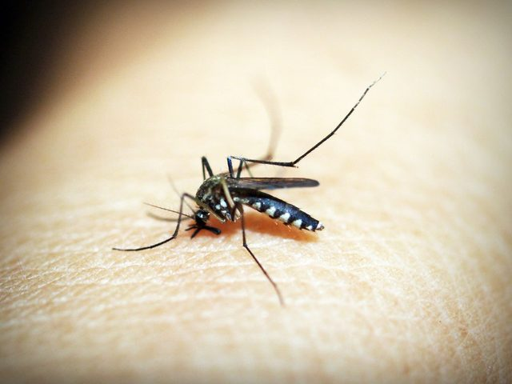
20mosquiton.
蚊子
複數 mosquitoes／mosquitos
A mosquito bit me on the arm.一隻蚊子叮了我的手臂。
21snailn.
蝸牛
at a snail's pace 非常慢
The snail moves very slowly.蝸牛爬得很慢。
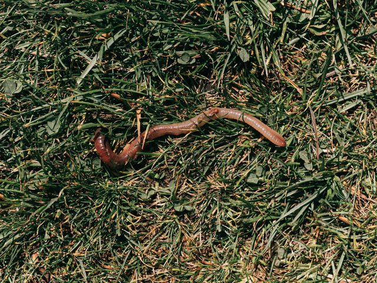
22wormn.
蟲；蠕蟲
The early bird catches the worm. 早起的鳥兒有蟲吃
The bird caught a worm.那隻鳥抓到一隻蟲。
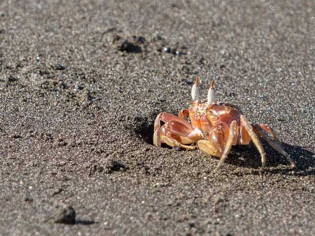
23crabn.
螃蟹
We saw many small crabs on the beach.我們在海灘上看到很多小螃蟹。

24dolphinn.
海豚
Dolphins are friendly and smart.海豚友善又聰明。

25sharkn.
鯊魚
Sharks have many sharp teeth.鯊魚有很多尖牙。
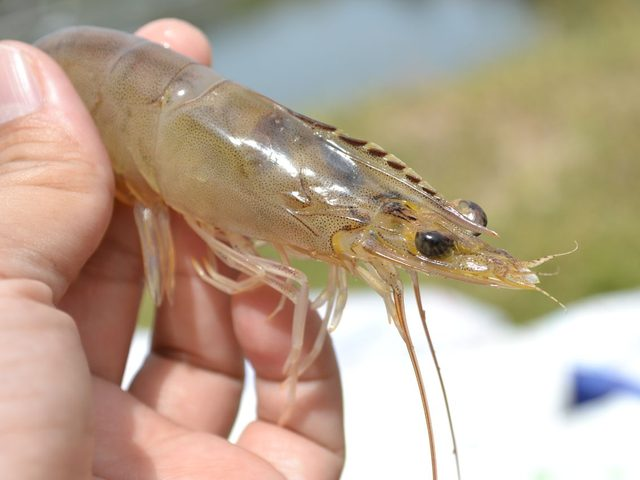
26shrimpn.
蝦子
複數 shrimp／shrimps
A shrimp has ten legs.蝦子有十隻腳。
27whalen.
鯨魚
killer whale 虎鯨
The whale is the largest animal in the world.鯨魚是世界上最大的動物。
28barkv. / n.
（狗）吠叫；樹皮
Barking dogs seldom bite. 會叫的狗不咬人
The dog barks at every stranger.那隻狗對每個陌生人吠叫。
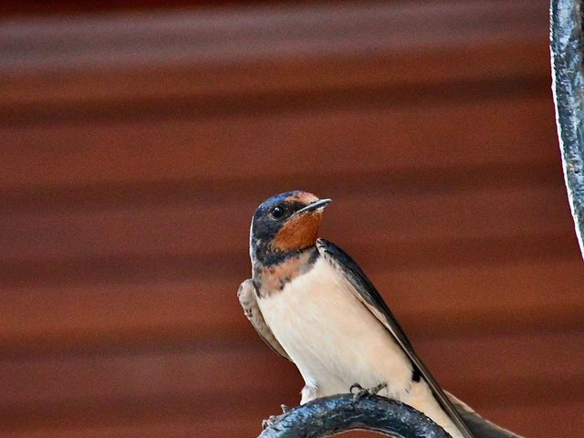
29swallown. / v.
燕子；吞下
swallow the pill 把藥吞下
Swallows build nests under the roof.燕子在屋簷下築巢。
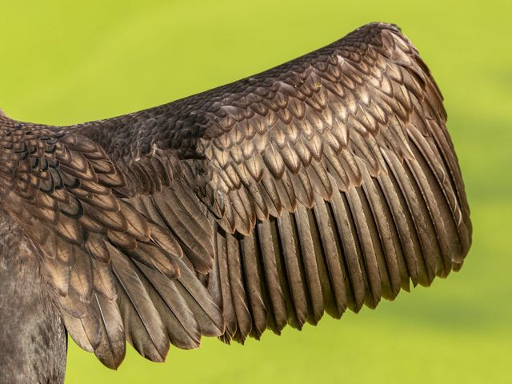
30wingn.
翅膀
The bird hurt its wing and couldn't fly.那隻鳥傷了翅膀，飛不起來。
FOCUS
不規則複數
| 單數 | 複數 |
|---|---|
| deer | deer |
| ox | oxen |
| wolf | wolves |
| shrimp | shrimp／shrimps |
| mosquito | mosquitoes |
動物寶寶：cat → kitten、sheep → lamb、dog → puppy。